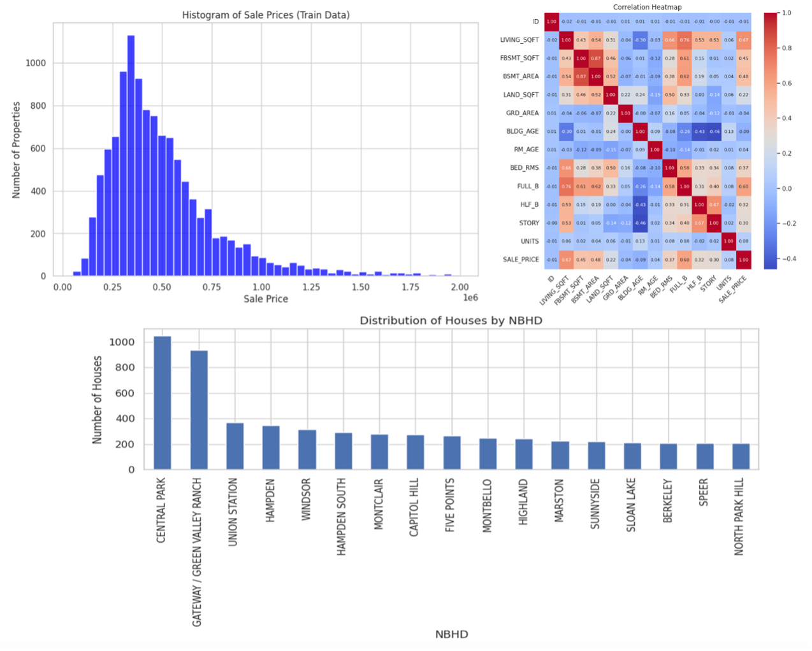
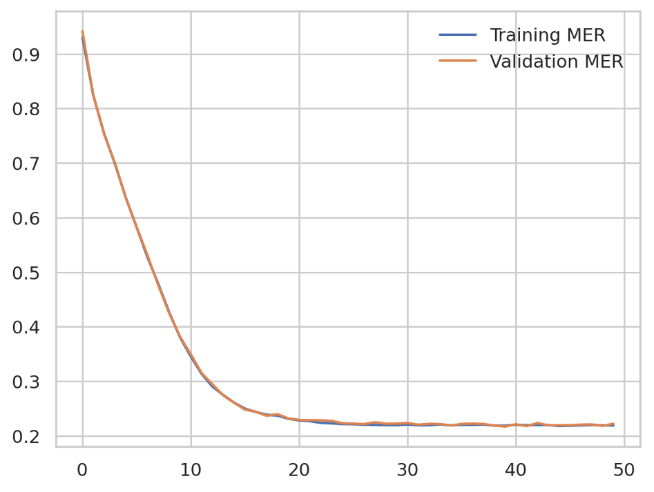
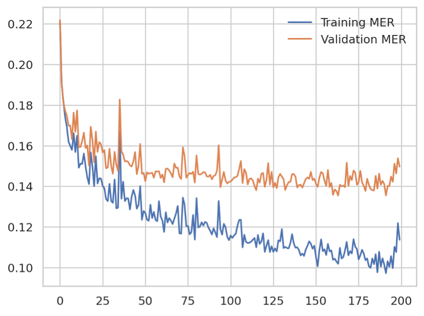
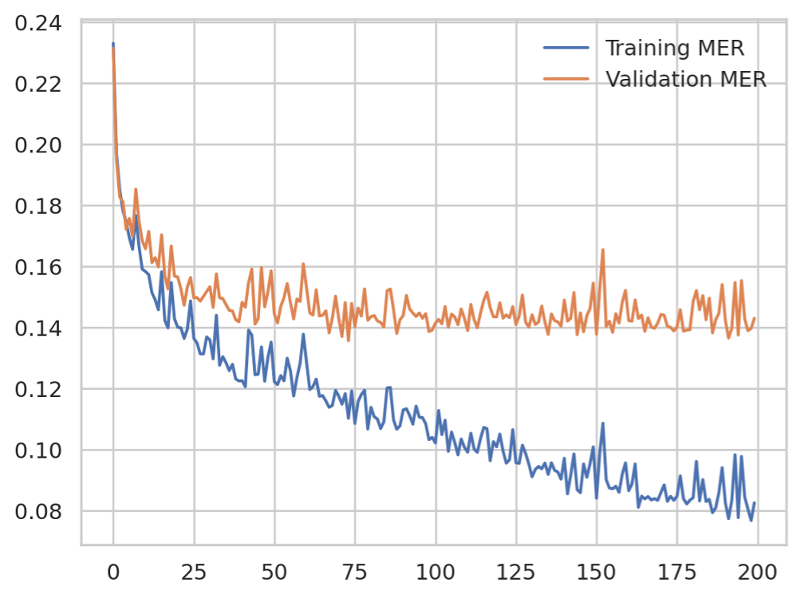
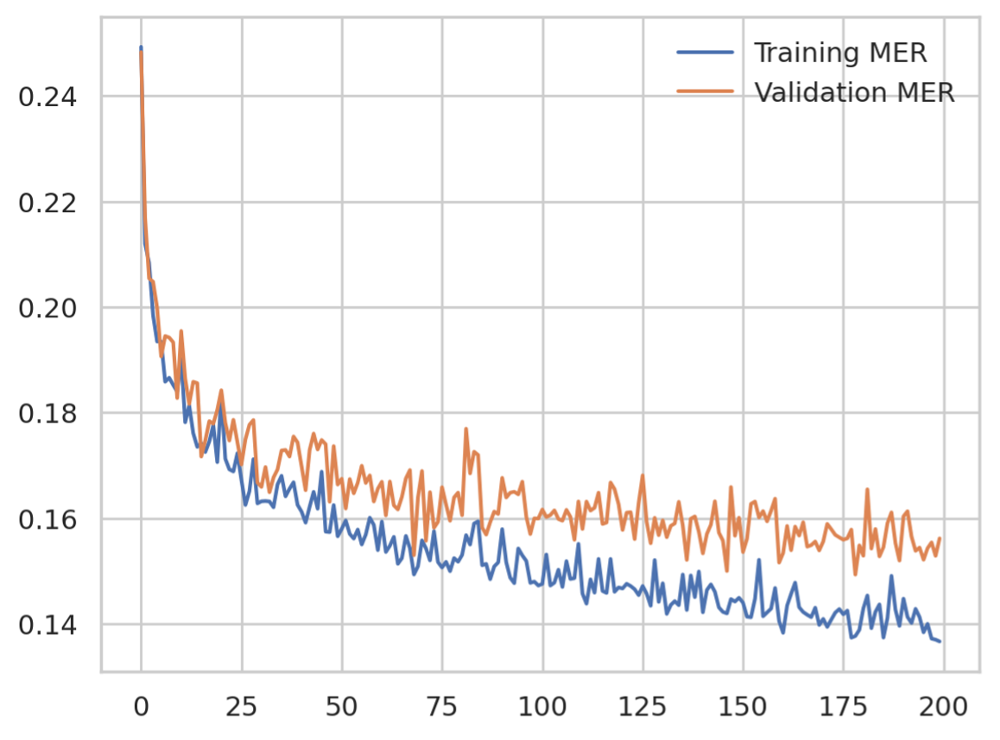
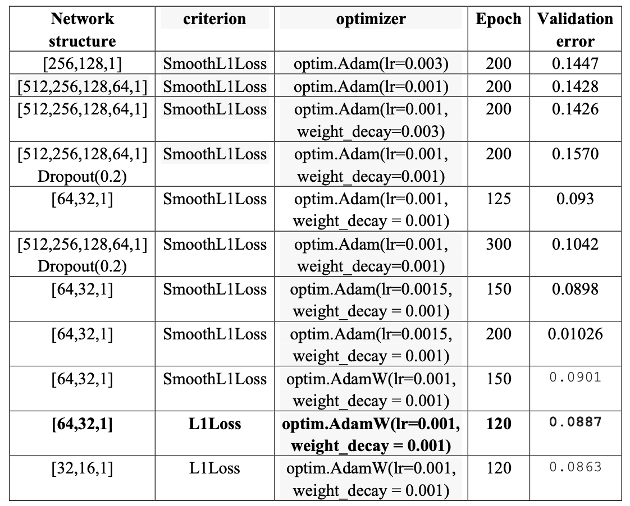
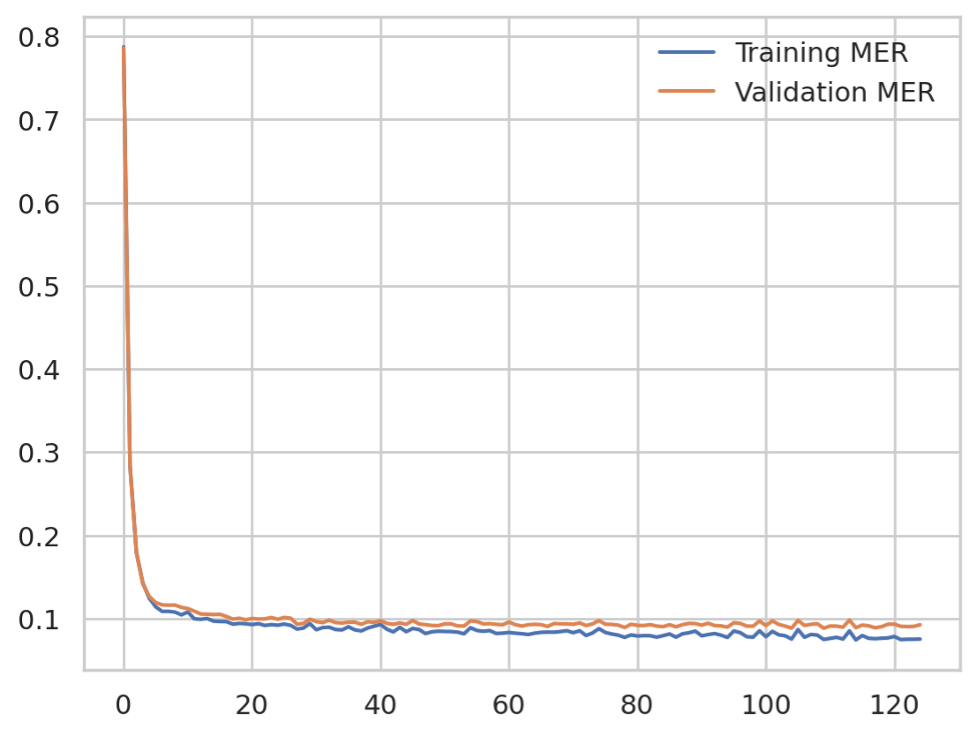
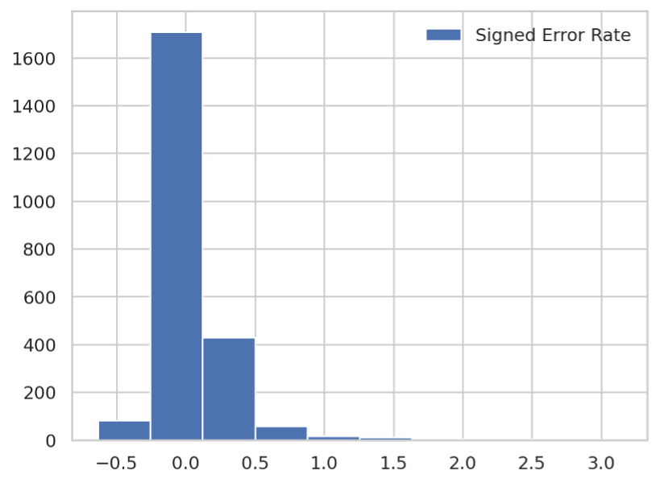
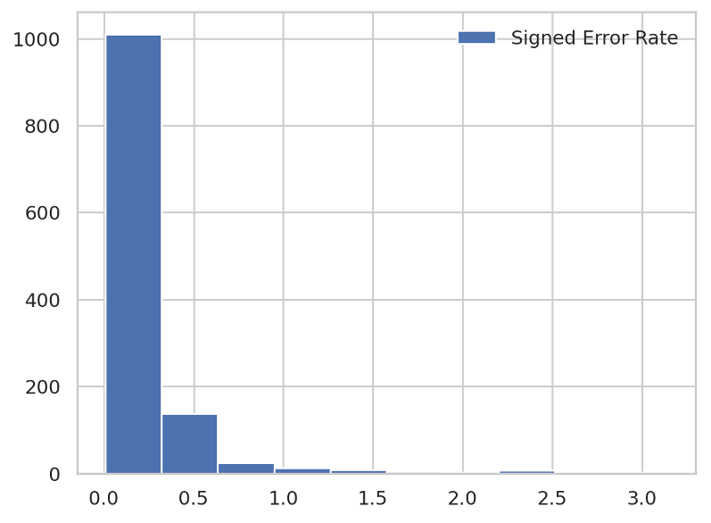

House Price Prediction
Python – Google Colab
ABSTRACT
For real estate agents, employing data analysis techniques to estimate property prices is a crucial aspect of their operations. This is because they strive to ensure that their purchase prices remain below the future selling prices of the properties. In this study, we aim to model property prices using Multilayer Perceptron (MLP) and fine-tune the model hyperparameters to optimize performance. Subsequently, we will analyze the profitability of the iBuyer business model based on the predicted prices generated from the validation dataset.
Objectives
• To model property prices using MLP.
• To tune the hyperparameters of the MLP model to enhance accuracy.
• To assess the profitability of the iBuyer business model based on predicted property prices.
Methodology
• Data Preprocessing: Clean and preprocess the data to ensure its suitability for analysis.
• Model Construction: Develop an MLP model to predict property prices.
• Hyperparameter Tuning: Optimize the model hyperparameters using techniques such as grid search or random search.
• Evaluation: Assess the performance of the tuned MLP model using validation data.
• Profitability Analysis: Analyze the profitability of the iBuyer business model based on the predicted property prices.
Expected Outcome
The project aims to provide insights into the efficacy of using MLP for real estate price estimation and to evaluate the potential profitability of the iBuyer business model in the real estate market.
Keywords: Real estate, Multilayer Perceptron (MLP), Hyperparameter tuning, iBuyer business model, Profitability analysis.
DATA PROCESSING
Overview
I first took a look at the distribution of sale prices, the correlation matrix and the distribution of houses over different NBHD in the train data.

Data Preparation
- Train labels: We need to extract the sale prices from the train data as train labels. Since the house prices can take very large values, to make training fast it is helpful to define the train labels as the sale prices divided by a normalization factor.
- Handing non-numeric features: Some of the house features are non-numeric. We will learn about how to process categorical data in the upcoming lectures. For now, you can remove those non-numeric features and only train over the numeric features.
- Feature standardization: When predicting house prices, you started from features that took a variety of ranges—some features had small floating-point values, and others had fairly large integer values. The model might be able to automatically adapt to such heterogeneous data, but it would definitely make learning more difficult. A widespread best practice for dealing with such data is to do feature-wise normalization: for each feature in the input data (a column in the input dataframe), we subtract the mean of the feature and divide by the standard deviation, so that the feature is centered around 0 and has a unit standard deviation. Note: We need to ensure that the train and test data go through the same normalization.
- Handling missing values: There may exist some entries with missing values. After the feature standardization, we can impute the missing values with zeros.
DataLoaders and Batching
After creating training, test, and validation data, we can create DataLoaders for this data by following two steps:
- Create a known format for accessing our data, using TensorDataset which takes in an input set of data and a target set of data with the same first dimension, and creates a dataset.
- Create DataLoaders and batch our training, validation, and test Tensor datasets. Note that we will shuffle the train data, so the model will not learn a particular order. For test data, we do not shuffle.
MODEL CONSTRUCTION
Linear Regression as Benchmark
Note that with house prices, as with stock prices, we care about relative quantities more than absolute quantities. Thus, we tend to care more about the relative error than about the absolute error. For instance, if our prediction is off by $100,000 when estimating the sale price of a house which is $125,000, then we are probably doing a horrible job. On the other hand, if we err by this amount for a house with sale price $2 million, this might represent a pretty accurate prediction.
To this end, we will use the median error rate (MER) used by Zestimate to measure the predictive performance. The error rate is defined as
Error Rate = ∣ (∣Predicted Price−Actual Price|) / Actual Price ∣
The median error rate is defined as the median of error rates for all properties. Then we are able to plot the training and validation error (MER) over epochs:

Multi-layer Perceptron Base Model
We build a multi-layer perceptron neural network with 2 hidden layers of sizes 256 and 128, respectively and ReLu activations. Then we plot the training and validation error (MER) over epochs: (learning rate = 0.003, epoch = 200)

Change Network Architecture
Then we build a MLP with 4 hidden layer of sizes 512, 256, 128, 54, respectively and plot the training and validation error (MER) over epochs: (learning rate = 0.001, epoch = 200)

Add Norm Regularization (L2 Norm)
(4 hidden layers of sizes 512, 256, 128, 64 and norm regularization, learning rate = 0.001, epoch = 200)

Add Dropout Layer
(4 hidden layers of sizes 512, 256, 128, 64 and dropout rate 20%, learning rate = 0.001, epoch = 200)

HYPERPARAMETER TUNING
We can try for different network structures, criterion, optimizers and epochs to find model with better validation error. Here is a table listing all the models we build:

Therefore, the MLP with 2 hidden layers of sizes 64, 32, L1Loss as criterion, Adam as optimizer (learning rate = 0.001, weight_decay = 0.001) and epoch = 120 generate the best result, which generates the lowest MER at 0.0887. Here is the training and validation MER for this model:

EVALUATION
I write the code to generate predicted sale prices for test data. Then I compute the signed error rates (without taking the absolute value sign), that is
Signed Error Rate = (Predicted Price−Actual Price) / Actual Price
and plot the histogram of prediction errors. The bias of the series is about 0.0565, which is quite small.

PROFIT ANALYSIS
We assume the iBuyer will make an offer to every property in the valid data based on their predicted price ùëÉùëÉ. We assume the iBuyer decides the offer price ùëÇùëÉ according to
ùëÇùëÉ=ùëÉùëÉ/(1+ùõº) ,
where ùõº is the (targeted) profit margin of the iBuyer. Here we assume the profit margin has already taken into consideration the commission fee charged by the iBuyer and various costs associated such as transaction cost, administration cost, and holding cost. Note that the commission fee charged by Zillow is often around 7.5% and Zillow may charge additional repair costs after home inspection. Thus, we take ùõº=12% in this case study.
We further assume that the iBuyer can resell the property at the same price as the broker in the future once the property is bought. In other words, the resell price is equal to the sale price in the valid data. This assumption may not be exactly true in practice and the iBuyer may sell the house at either a higher or lower price depending on the market trend. But our conclusion will not change too much.
Based on the above two assumptions, we can now determine the percentage profit for a property bought by the iBuyer as
(ùëÜùëÉ‚àíùëÇùëÉ)/ùëÇùëÉ .
We use the percentage profit instead of the absolute profit because the iBuyer cannot hope to purchase all houses in the market. Therefore, the percentage profit is a better measure of the profitability of the iBuyer business model. The aim of the iBuyer in this simplified setting is to purchase properties for less money than they are sold for, to generate a profit.
However, not every offer will be accepted by the home owner. Given an offer price, whether the homeowner accepts it depends on the homeowner's perceived valuation. For the current dataset, we lack enough data to determine the homeowner's perceived valuation of the property. However, the actual sale price in the valid data serves as a reasonable proxy of the homeowner's perceived valuation. Therefore, we assume that the home owner will accept the offer, if
ùëÇùëÉ>(1‚àíùõΩ)ùëÜùëÉ,
where ùõΩ is a discounting factor. Here the discounting factor captures the commission fee charged by the conventional realtors which is around 6%, as well as the convenience factor that models how much the homeowner values the quick transaction services of the iBuyer over the conventional relator. We assume ùõΩ=10% in this case.
If the offers are all accepted regardless of their values, the average percentage profit is 0.1259. There is no big difference compared to the profit margin 0.12, which indicates that our predicted prices are quite similar to the real sale prices.
However, based on the sale price in the valid data and the acceptance rule, the mean percentage profit among all accepted offers is -0.034. There is a big difference compared to the targeted profit margin 0.12. The bias of the prediction errors when restricting to those properties whose owners accepted the offer is about 0.2 and the histogram is shown as below.

The bias of the prediction error is relatively high, which indicates that the predicted prices are generally higher than the true prices. Therefore, iBuyer actually provides higher offer price so the home owners would like to accept the offer. This will lead to the result that iBuyer buys these houses using high prices but only resell them at low price, that’s why the mean percentage profit is negative and quite different from the profit margin 0.12.